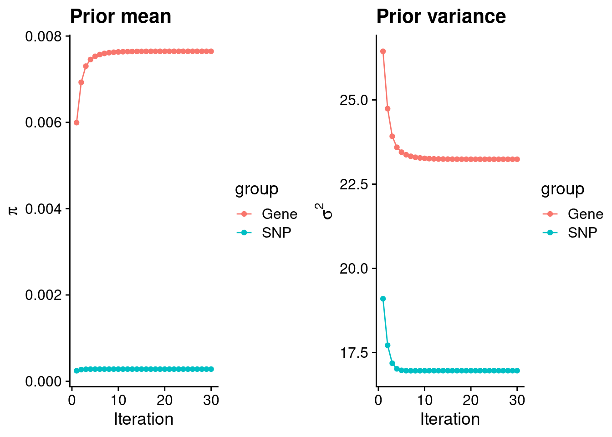
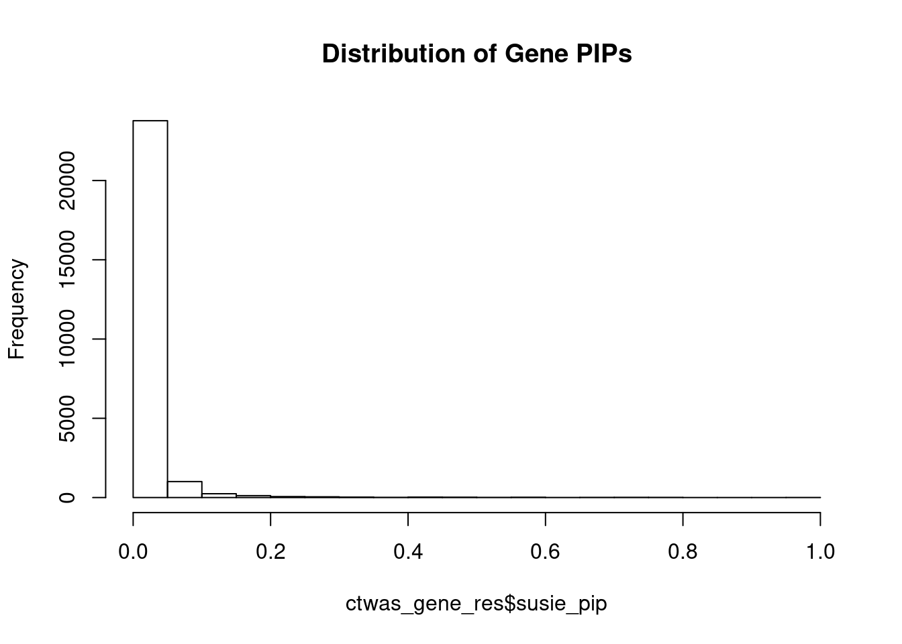
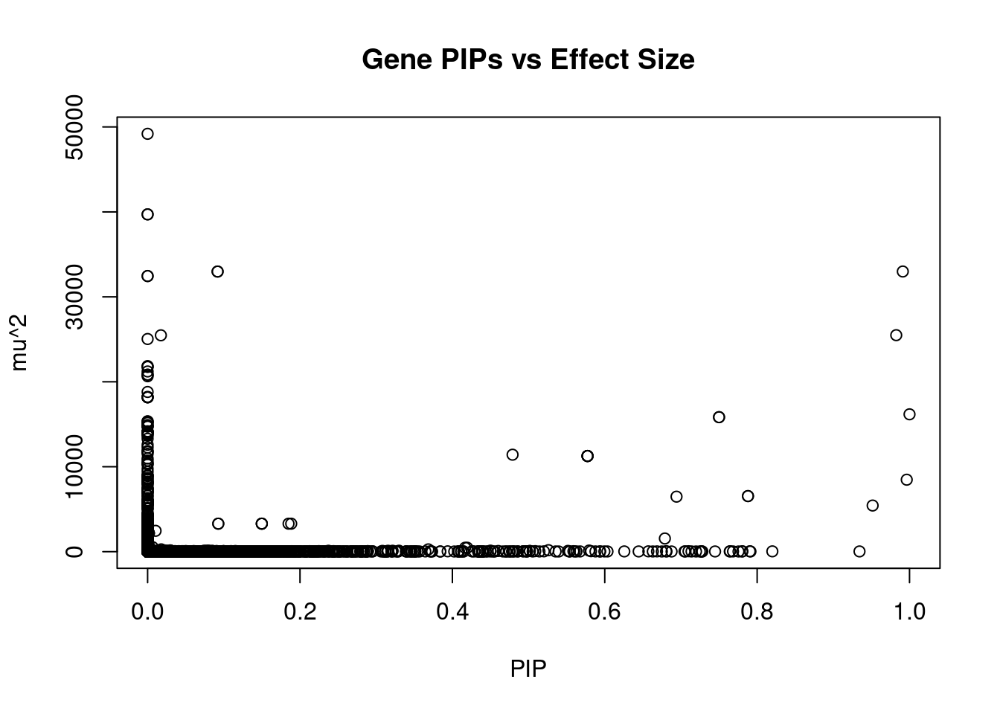
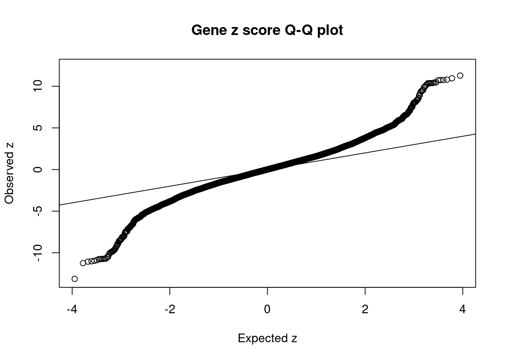
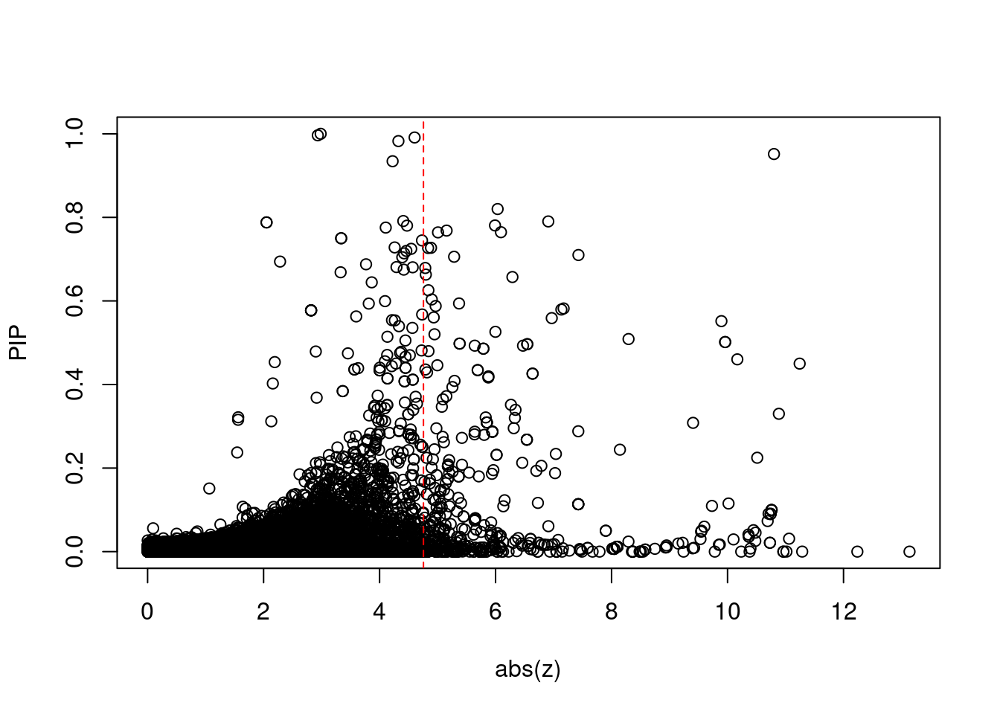
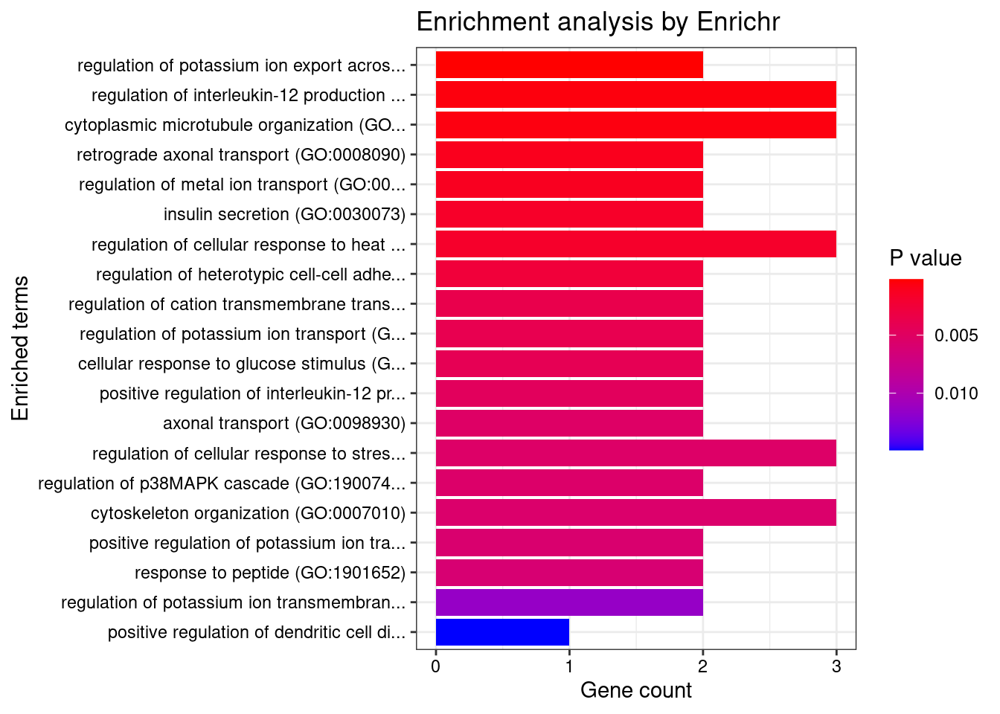
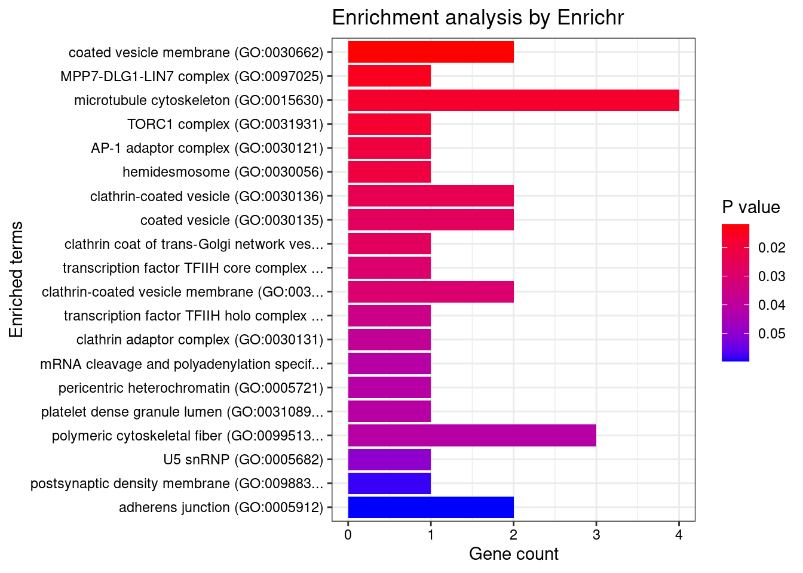
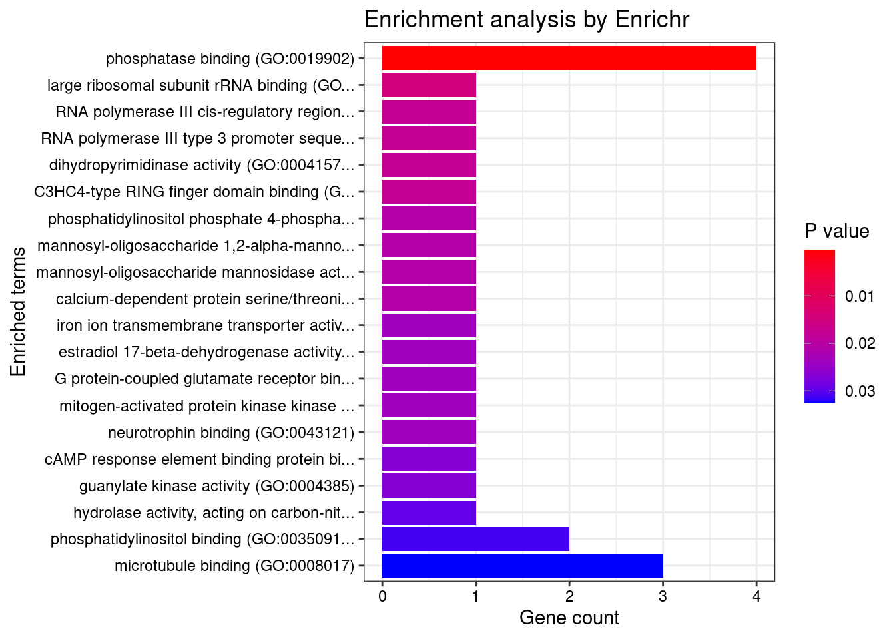
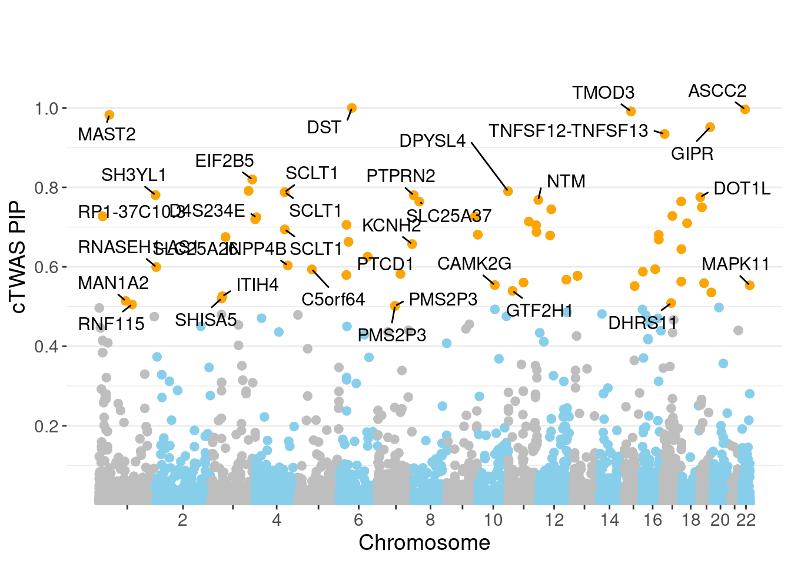
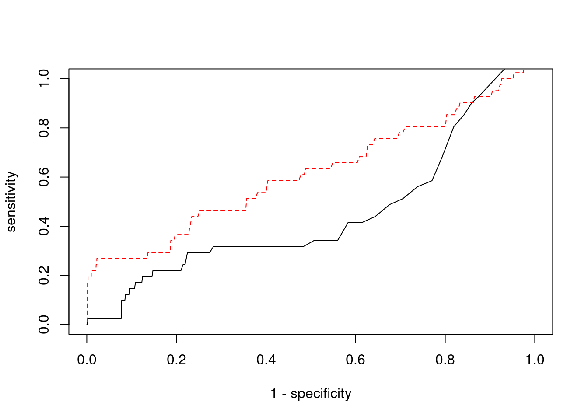

Last updated: 2022-02-22
Checks: 6 1
Knit directory: cTWAS_analysis/
This reproducible R Markdown analysis was created with workflowr (version 1.6.2). The Checks tab describes the reproducibility checks that were applied when the results were created. The Past versions tab lists the development history.
Great! Since the R Markdown file has been committed to the Git repository, you know the exact version of the code that produced these results.
Great job! The global environment was empty. Objects defined in the global environment can affect the analysis in your R Markdown file in unknown ways. For reproduciblity it’s best to always run the code in an empty environment.
The command set.seed(20211220) was run prior to running the code in the R Markdown file. Setting a seed ensures that any results that rely on randomness, e.g. subsampling or permutations, are reproducible.
Great job! Recording the operating system, R version, and package versions is critical for reproducibility.
Nice! There were no cached chunks for this analysis, so you can be confident that you successfully produced the results during this run.
Using absolute paths to the files within your workflowr project makes it difficult for you and others to run your code on a different machine. Change the absolute path(s) below to the suggested relative path(s) to make your code more reproducible.
| absolute | relative |
|---|---|
| /project2/xinhe/shengqian/cTWAS/cTWAS_analysis/data/ | data |
| /project2/xinhe/shengqian/cTWAS/cTWAS_analysis/code/ctwas_config.R | code/ctwas_config.R |
Great! You are using Git for version control. Tracking code development and connecting the code version to the results is critical for reproducibility.
The results in this page were generated with repository version 1058990. See the Past versions tab to see a history of the changes made to the R Markdown and HTML files.
Note that you need to be careful to ensure that all relevant files for the analysis have been committed to Git prior to generating the results (you can use wflow_publish or wflow_git_commit). workflowr only checks the R Markdown file, but you know if there are other scripts or data files that it depends on. Below is the status of the Git repository when the results were generated:
Ignored files:
Ignored: .ipynb_checkpoints/
Untracked files:
Untracked: Rplot.png
Untracked: analysis/.ipynb_checkpoints/
Untracked: analysis/Glucose_Adipose_Subcutaneous.Rmd
Untracked: analysis/Glucose_Adipose_Visceral_Omentum.Rmd
Untracked: analysis/Splicing_Test.Rmd
Untracked: code/.ipynb_checkpoints/
Untracked: code/AF_out/
Untracked: code/BMI_S_out/
Untracked: code/BMI_out/
Untracked: code/Glucose_out/
Untracked: code/LDL_S_out/
Untracked: code/T2D_out/
Untracked: code/ctwas_config.R
Untracked: code/mapping.R
Untracked: code/out/
Untracked: code/run_AF_analysis.sbatch
Untracked: code/run_AF_analysis.sh
Untracked: code/run_AF_ctwas_rss_LDR.R
Untracked: code/run_BMI_analysis.sbatch
Untracked: code/run_BMI_analysis.sh
Untracked: code/run_BMI_analysis_S.sbatch
Untracked: code/run_BMI_analysis_S.sh
Untracked: code/run_BMI_ctwas_rss_LDR.R
Untracked: code/run_BMI_ctwas_rss_LDR_S.R
Untracked: code/run_Glucose_analysis.sbatch
Untracked: code/run_Glucose_analysis.sh
Untracked: code/run_Glucose_ctwas_rss_LDR.R
Untracked: code/run_LDL_analysis_S.sbatch
Untracked: code/run_LDL_analysis_S.sh
Untracked: code/run_LDL_ctwas_rss_LDR_S.R
Untracked: code/run_T2D_analysis.sbatch
Untracked: code/run_T2D_analysis.sh
Untracked: code/run_T2D_ctwas_rss_LDR.R
Untracked: data/.ipynb_checkpoints/
Untracked: data/AF/
Untracked: data/BMI/
Untracked: data/BMI_S/
Untracked: data/Glucose/
Untracked: data/LDL_S/
Untracked: data/T2D/
Untracked: data/TEST/
Untracked: data/UKBB/
Untracked: data/UKBB_SNPs_Info.text
Untracked: data/gene_OMIM.txt
Untracked: data/gene_pip_0.8.txt
Untracked: data/mashr_Heart_Atrial_Appendage.db
Untracked: data/mashr_sqtl/
Untracked: data/summary_known_genes_annotations.xlsx
Untracked: data/untitled.txt
Unstaged changes:
Modified: analysis/BMI_Brain_Cortex.Rmd
Modified: analysis/LDL_Liver_S.Rmd
Modified: analysis/index.Rmd
Note that any generated files, e.g. HTML, png, CSS, etc., are not included in this status report because it is ok for generated content to have uncommitted changes.
These are the previous versions of the repository in which changes were made to the R Markdown (analysis/BMI_Brain_Nucleus_accumbens_basal_ganglia_S.Rmd) and HTML (docs/BMI_Brain_Nucleus_accumbens_basal_ganglia_S.html) files. If you’ve configured a remote Git repository (see ?wflow_git_remote), click on the hyperlinks in the table below to view the files as they were in that past version.
| File | Version | Author | Date | Message |
|---|---|---|---|---|
| Rmd | 1058990 | sq-96 | 2022-02-22 | update |
#number of imputed weights
nrow(qclist_all)[1] 25404#number of imputed weights by chromosome
table(qclist_all$chr)
1 2 3 4 5 6 7 8 9 10 11 12 13 14 15 16
2325 1736 1544 992 1008 1320 1439 902 1002 1176 1512 1297 482 858 850 1166
17 18 19 20 21 22
1693 349 1800 850 332 771 #number of imputed weights without missing variants
sum(qclist_all$nmiss==0)[1] 23231#proportion of imputed weights without missing variants
mean(qclist_all$nmiss==0)[1] 0.9145#add z scores to results
load(paste0(results_dir, "/", analysis_id, "_expr_z_gene.Rd"))
ctwas_gene_res$z <- z_gene[ctwas_gene_res$intron_id,]$z
z_snp <- z_snp[z_snp$id %in% ctwas_snp_res$id,]
ctwas_snp_res$z <- z_snp$z[match(ctwas_snp_res$id, z_snp$id)]
#merge gene and snp results with added information
ctwas_snp_res$genename=NA
ctwas_snp_res$gene_type=NA
ctwas_snp_res$intron_id=NA
ctwas_res <- rbind(ctwas_gene_res,
ctwas_snp_res[,colnames(ctwas_gene_res)])
#get number of eQTL for geens
num_eqtl <- c()
for (i in 1:22){
load(paste0(results_dir, "/", analysis_id, "_expr_chr", i, ".exprqc.Rd"))
num_eqtl <- c(num_eqtl, unlist(lapply(wgtlist, nrow)))
}
ctwas_gene_res$num_eqtl <- num_eqtl[ctwas_gene_res$intron_id]
#store columns to report
report_cols <- colnames(ctwas_gene_res)[!(colnames(ctwas_gene_res) %in% c("type", "region_tag1", "region_tag2", "cs_index", "gene_type", "z_flag", "id", "chrom", "pos"))]
first_cols <- c("genename", "region_tag")
report_cols <- c(first_cols, report_cols[!(report_cols %in% first_cols)])
report_cols_snps <- c("id", report_cols[-1])
report_cols_snps <- report_cols_snps[!(report_cols_snps %in% "num_eqtl")]
#get number of SNPs from s1 results; adjust for thin argument
ctwas_res_s1 <- data.table::fread(paste0(results_dir, "/", analysis_id, "_ctwas.s1.susieIrss.txt"))
n_snps <- sum(ctwas_res_s1$type=="SNP")/thin
rm(ctwas_res_s1)
#estimated group prior
estimated_group_prior <- group_prior_rec[,ncol(group_prior_rec)]
names(estimated_group_prior) <- c("gene", "snp")
estimated_group_prior["snp"] <- estimated_group_prior["snp"]*thin #adjust parameter to account for thin argument
print(estimated_group_prior) gene snp
0.0076468 0.0002809 #estimated group prior variance
estimated_group_prior_var <- group_prior_var_rec[,ncol(group_prior_var_rec)]
names(estimated_group_prior_var) <- c("gene", "snp")
print(estimated_group_prior_var) gene snp
23.24 16.96 #report sample size
print(sample_size)[1] 336107#report group size
group_size <- c(nrow(ctwas_gene_res), n_snps)
print(group_size)[1] 25404 7535010#estimated group PVE
estimated_group_pve <- estimated_group_prior_var*estimated_group_prior*group_size/sample_size #check PVE calculation
names(estimated_group_pve) <- c("gene", "snp")
print(estimated_group_pve) gene snp
0.01343 0.10682 #compare sum(PIP*mu2/sample_size) with above PVE calculation
c(sum(ctwas_gene_res$PVE),sum(ctwas_snp_res$PVE))[1] 0.5317 15.9506
genename region_tag susie_pip mu2 PVE
24394 DST 6_42 1.0000 16171.48 4.811e-02
25367 ASCC2 22_10 0.9963 8472.85 2.512e-02
24792 TMOD3 15_21 0.9912 32984.25 9.727e-02
24171 MAST2 1_28 0.9826 25488.50 7.451e-02
25172 GIPR 19_32 0.9516 5431.93 1.538e-02
24981 TNFSF12-TNFSF13 17_8 0.9344 28.45 7.909e-05
24250 EIF2B5 3_113 0.8200 37.60 9.173e-05
5270 SERPINI1 3_103 0.7912 23.69 5.577e-05
12907 DPYSL4 10_83 0.7903 44.55 1.048e-04
6239 SCLT1 4_85 0.7880 6544.24 1.534e-02
6240 SCLT1 4_85 0.7880 6544.24 1.534e-02
2276 SH3YL1 2_1 0.7807 45.30 1.052e-04
10065 PTPRN2 7_98 0.7802 22.72 5.274e-05
20848 DOT1L 19_3 0.7756 22.73 5.245e-05
24622 NTM 11_82 0.7684 29.27 6.690e-05
20204 RPTOR 17_45 0.7645 47.83 1.088e-04
10323 SLC25A37 8_24 0.7641 27.22 6.187e-05
25136 ZNF559-ZNF177 19_9 0.7500 15834.62 3.533e-02
25135 ZNF559-ZNF177 19_9 0.7500 15834.62 3.533e-02
14863 CBX5 12_33 0.7448 25.94 5.748e-05
intron_id z num_eqtl
24394 intron_6_56468999_56469883 2.984 1
25367 intron_22_29822464_29825087 2.935 1
24792 intron_15_51934354_51946990 4.604 1
24171 intron_1_45997799_46000959 -4.325 1
25172 intron_19_45677779_45677906 10.801 1
24981 intron_17_7559702_7560049 -4.225 1
24250 intron_3_184278313_184283785 6.036 2
5270 intron_3_167735823_167789111 -4.409 2
12907 intron_10_132187102_132190747 -6.909 2
6239 intron_4_128959777_128965227 -2.051 1
6240 intron_4_128959777_128970378 2.051 1
2276 intron_2_253115_264782 5.990 1
10065 intron_7_157682937_157898673 -4.473 1
20848 intron_19_2199939_2202700 -4.106 1
24622 intron_11_131582378_131660929 -5.156 1
20204 intron_17_80730706_80754010 -6.093 1
10323 intron_8_23529212_23566108 5.008 1
25136 intron_19_9364948_9376316 -3.338 1
25135 intron_19_9364948_9371610 3.338 1
14863 intron_12_54257692_54280008 -4.732 1
genename region_tag susie_pip mu2 PVE
21319 MAST3 19_14 0.000e+00 49193 0.000e+00
21323 MAST3 19_14 0.000e+00 39707 0.000e+00
21324 MAST3 19_14 0.000e+00 39707 0.000e+00
24792 TMOD3 15_21 9.912e-01 32984 9.727e-02
24789 TMOD3 15_21 9.186e-02 32978 9.013e-03
24790 TMOD3 15_21 9.186e-02 32978 9.013e-03
24791 TMOD3 15_21 0.000e+00 32449 0.000e+00
24793 LEO1 15_21 6.817e-14 32448 6.581e-15
24171 MAST2 1_28 9.826e-01 25489 7.451e-02
24170 MAST2 1_28 1.741e-02 25473 1.319e-03
24620 BDNF-AS 11_19 0.000e+00 25038 0.000e+00
24167 GPBP1L1 1_28 0.000e+00 21847 0.000e+00
17194 CATSPER2P1 15_16 0.000e+00 21782 0.000e+00
13863 IGHMBP2 11_38 0.000e+00 21753 0.000e+00
24166 NASP 1_28 0.000e+00 21214 0.000e+00
24162 NASP 1_28 0.000e+00 20834 0.000e+00
24163 NASP 1_28 0.000e+00 20834 0.000e+00
24617 BDNF-AS 11_19 0.000e+00 20652 0.000e+00
24204 R3HDM1 2_80 0.000e+00 18802 0.000e+00
24206 UBXN4 2_80 0.000e+00 18225 0.000e+00
intron_id z num_eqtl
21319 intron_19_18110741_18121685 -7.147 1
21323 intron_19_18147017_18147443 -6.726 1
21324 intron_19_18147044_18147443 6.726 1
24792 intron_15_51934354_51946990 4.604 1
24789 intron_15_51924578_51931031 -4.569 1
24790 intron_15_51924578_51934250 4.569 1
24791 intron_15_51931133_51934250 4.672 1
24793 intron_15_51958826_51959899 -4.665 1
24171 intron_1_45997799_46000959 -4.325 1
24170 intron_1_45882395_45959386 -4.311 1
24620 intron_11_27659228_27676982 -1.202 1
24167 intron_1_45642499_45654543 4.500 1
17194 intron_15_43744219_43744395 -4.508 1
13863 intron_11_68929357_68933299 4.493 1
24166 intron_1_45617591_45618061 4.297 1
24162 intron_1_45591270_45600385 3.951 1
24163 intron_1_45591270_45602255 -3.951 1
24617 intron_11_27640005_27658241 5.845 1
24204 intron_2_135680324_135709433 4.474 1
24206 intron_2_135754277_135755517 -3.871 1 genename region_tag susie_pip mu2 PVE
24792 TMOD3 15_21 0.99119 32984 0.097271
24171 MAST2 1_28 0.98257 25489 0.074513
24394 DST 6_42 1.00000 16171 0.048114
25136 ZNF559-ZNF177 19_9 0.75000 15835 0.035334
25135 ZNF559-ZNF177 19_9 0.75000 15835 0.035334
25367 ASCC2 22_10 0.99635 8473 0.025117
15729 SPG20 13_13 0.57737 11262 0.019346
15727 SPG20 13_13 0.57737 11262 0.019346
15726 SPG20 13_13 0.57737 11262 0.019346
15728 SPG20 13_13 0.57737 11262 0.019346
24279 CCDC127 5_1 0.47900 11416 0.016270
25172 GIPR 19_32 0.95160 5432 0.015379
6239 SCLT1 4_85 0.78796 6544 0.015342
6240 SCLT1 4_85 0.78796 6544 0.015342
6241 SCLT1 4_85 0.69420 6477 0.013378
24789 TMOD3 15_21 0.09186 32978 0.009013
24790 TMOD3 15_21 0.09186 32978 0.009013
24647 RP11-386G11.5 12_31 0.67889 1552 0.003135
1979 TATDN3 1_108 0.18847 3296 0.001848
1980 TATDN3 1_108 0.18498 3296 0.001814
intron_id z num_eqtl
24792 intron_15_51934354_51946990 4.604 1
24171 intron_1_45997799_46000959 -4.325 1
24394 intron_6_56468999_56469883 2.984 1
25136 intron_19_9364948_9376316 -3.338 1
25135 intron_19_9364948_9371610 3.338 1
25367 intron_22_29822464_29825087 2.935 1
15729 intron_13_36335832_36346582 2.819 1
15727 intron_13_36335832_36346225 -2.819 1
15726 intron_13_36335832_36336287 2.819 1
15728 intron_13_36335832_36346240 -2.819 1
24279 intron_5_216859_218093 2.900 1
25172 intron_19_45677779_45677906 10.801 1
6239 intron_4_128959777_128965227 -2.051 1
6240 intron_4_128959777_128970378 2.051 1
6241 intron_4_129039096_129043395 2.284 1
24789 intron_15_51924578_51931031 -4.569 1
24790 intron_15_51924578_51934250 4.569 1
24647 intron_12_49005543_49005743 4.788 1
1979 intron_1_212804429_212804596 3.299 1
1980 intron_1_212804651_212807736 -3.301 1 genename region_tag susie_pip mu2 PVE
24619 BDNF-AS 11_19 0.000e+00 9402.82 0.000e+00
24618 BDNF-AS 11_19 0.000e+00 12261.81 0.000e+00
2436 DNAJC27-AS1 2_15 8.085e-05 190.45 4.581e-08
7880 C6orf106 6_28 4.500e-01 122.03 1.634e-04
18244 DOC2A 16_24 3.101e-02 100.85 9.303e-06
2434 DNAJC27-AS1 2_15 9.014e-05 183.83 4.930e-08
4514 RNF123 3_35 2.990e-11 793.04 7.055e-14
4516 RNF123 3_35 2.955e-11 792.32 6.966e-14
1838 LMOD1 1_102 3.299e-01 113.26 1.112e-04
25172 GIPR 19_32 9.516e-01 5431.93 1.538e-02
18210 SH2B1 16_23 9.945e-02 64.66 1.913e-05
18212 SH2B1 16_23 9.945e-02 64.66 1.913e-05
18211 SH2B1 16_23 9.994e-02 64.68 1.923e-05
18206 ATXN2L 16_23 9.083e-02 64.23 1.736e-05
18205 ATXN2L 16_23 8.963e-02 64.17 1.711e-05
18237 TAOK2 16_24 2.124e-02 93.45 5.906e-06
18238 TAOK2 16_24 2.124e-02 93.45 5.906e-06
18208 SH2B1 16_23 9.076e-02 64.30 1.736e-05
18207 SH2B1 16_23 7.320e-02 63.15 1.375e-05
18197 SULT1A2 16_23 2.247e-01 63.06 4.216e-05
intron_id z num_eqtl
24619 intron_11_27658462_27659171 -13.14 1
24618 intron_11_27640005_27659171 12.24 2
2436 intron_2_24972232_25001415 11.29 1
7880 intron_6_34654779_34696446 -11.24 1
18244 intron_16_30007090_30007173 -11.06 2
2434 intron_2_24972232_24972626 -11.02 2
4514 intron_3_49712656_49713513 10.96 1
4516 intron_3_49714174_49715575 -10.96 1
1838 intron_1_201900751_201946080 -10.89 1
25172 intron_19_45677779_45677906 10.80 1
18210 intron_16_28865624_28866012 -10.76 1
18212 intron_16_28869383_28871780 10.76 1
18211 intron_16_28867033_28867331 -10.76 1
18206 intron_16_28835399_28835549 -10.74 1
18205 intron_16_28835399_28835546 10.74 1
18237 intron_16_29989805_29990543 10.73 1
18238 intron_16_29989805_29990784 -10.73 1
18208 intron_16_28863754_28866012 -10.71 2
18207 intron_16_28846827_28863668 -10.69 1
18197 intron_16_28592481_28593252 -10.51 1
[1] 0.01819 genename region_tag susie_pip mu2 PVE
24619 BDNF-AS 11_19 0.000e+00 9402.82 0.000e+00
24618 BDNF-AS 11_19 0.000e+00 12261.81 0.000e+00
2436 DNAJC27-AS1 2_15 8.085e-05 190.45 4.581e-08
7880 C6orf106 6_28 4.500e-01 122.03 1.634e-04
18244 DOC2A 16_24 3.101e-02 100.85 9.303e-06
2434 DNAJC27-AS1 2_15 9.014e-05 183.83 4.930e-08
4514 RNF123 3_35 2.990e-11 793.04 7.055e-14
4516 RNF123 3_35 2.955e-11 792.32 6.966e-14
1838 LMOD1 1_102 3.299e-01 113.26 1.112e-04
25172 GIPR 19_32 9.516e-01 5431.93 1.538e-02
18210 SH2B1 16_23 9.945e-02 64.66 1.913e-05
18212 SH2B1 16_23 9.945e-02 64.66 1.913e-05
18211 SH2B1 16_23 9.994e-02 64.68 1.923e-05
18206 ATXN2L 16_23 9.083e-02 64.23 1.736e-05
18205 ATXN2L 16_23 8.963e-02 64.17 1.711e-05
18237 TAOK2 16_24 2.124e-02 93.45 5.906e-06
18238 TAOK2 16_24 2.124e-02 93.45 5.906e-06
18208 SH2B1 16_23 9.076e-02 64.30 1.736e-05
18207 SH2B1 16_23 7.320e-02 63.15 1.375e-05
18197 SULT1A2 16_23 2.247e-01 63.06 4.216e-05
intron_id z num_eqtl
24619 intron_11_27658462_27659171 -13.14 1
24618 intron_11_27640005_27659171 12.24 2
2436 intron_2_24972232_25001415 11.29 1
7880 intron_6_34654779_34696446 -11.24 1
18244 intron_16_30007090_30007173 -11.06 2
2434 intron_2_24972232_24972626 -11.02 2
4514 intron_3_49712656_49713513 10.96 1
4516 intron_3_49714174_49715575 -10.96 1
1838 intron_1_201900751_201946080 -10.89 1
25172 intron_19_45677779_45677906 10.80 1
18210 intron_16_28865624_28866012 -10.76 1
18212 intron_16_28869383_28871780 10.76 1
18211 intron_16_28867033_28867331 -10.76 1
18206 intron_16_28835399_28835549 -10.74 1
18205 intron_16_28835399_28835546 10.74 1
18237 intron_16_29989805_29990543 10.73 1
18238 intron_16_29989805_29990784 -10.73 1
18208 intron_16_28863754_28866012 -10.71 2
18207 intron_16_28846827_28863668 -10.69 1
18197 intron_16_28592481_28593252 -10.51 1#number of genes for gene set enrichment
length(genes)[1] 67Uploading data to Enrichr... Done.
Querying GO_Biological_Process_2021... Done.
Querying GO_Cellular_Component_2021... Done.
Querying GO_Molecular_Function_2021... Done.
Parsing results... Done.
[1] "GO_Biological_Process_2021"
[1] Term Overlap Adjusted.P.value Genes
<0 rows> (or 0-length row.names)
[1] "GO_Cellular_Component_2021"
[1] Term Overlap Adjusted.P.value Genes
<0 rows> (or 0-length row.names)
[1] "GO_Molecular_Function_2021"
Term Overlap Adjusted.P.value
1 phosphatase binding (GO:0019902) 4/114 0.04466
Genes
1 SLC9A3R2;SH3YL1;DLG1;MAST2Warning in disease_enrichment(entities = genes, vocabulary = "HGNC", database =
"CURATED"): Removing duplicates from input list. Description FDR Ratio
9 Body Weight 0.05526 2/27
77 Progressive cerebellar ataxia 0.05526 1/27
109 Mucinous carcinoma of breast 0.05526 1/27
117 Familial encephalopathy with neuroserpin inclusion bodies 0.05526 1/27
130 NEUROPATHY, HEREDITARY SENSORY AND AUTONOMIC, TYPE VI 0.05526 1/27
132 EPIDERMOLYSIS BULLOSA SIMPLEX, AUTOSOMAL RECESSIVE 2 0.05526 1/27
133 COMBINED OXIDATIVE PHOSPHORYLATION DEFICIENCY 28 0.05526 1/27
21 Diabetic Angiopathies 0.10910 1/27
22 Cardiac Arrest 0.10910 1/27
29 Long QT Syndrome 0.10910 1/27
BgRatio
9 15/9703
77 1/9703
109 1/9703
117 1/9703
130 1/9703
132 1/9703
133 1/9703
21 16/9703
22 5/9703
29 11/9703Loading the functional categories...
Loading the ID list...
Loading the reference list...
Performing the enrichment analysis...Warning in oraEnrichment(interestGeneList, referenceGeneList, geneSet, minNum =
minNum, : No significant gene set is identified based on FDR 0.05!NULLWarning: ggrepel: 33 unlabeled data points (too many overlaps). Consider
increasing max.overlaps
#number of genes in known annotations
print(length(known_annotations))[1] 41#number of genes in known annotations with imputed expression
print(sum(known_annotations %in% ctwas_gene_res$genename))[1] 18#significance threshold for TWAS
print(sig_thresh)[1] 4.757#number of ctwas genes
length(ctwas_genes)[1] 7#number of TWAS genes
length(twas_genes)[1] 462#show novel genes (ctwas genes with not in TWAS genes)
ctwas_gene_res[ctwas_gene_res$genename %in% novel_genes,report_cols] genename region_tag susie_pip mu2 PVE
24170 MAST2 1_28 0.017408 25472.560 1.319e-03
24171 MAST2 1_28 0.982568 25488.502 7.451e-02
24172 MAST2 1_28 0.000000 8460.213 0.000e+00
24173 MAST2 1_28 0.000000 879.923 0.000e+00
24174 MAST2 1_28 0.000000 879.923 0.000e+00
24390 DST 6_42 0.000000 1986.237 0.000e+00
24391 DST 6_42 0.000000 1138.577 0.000e+00
24392 DST 6_42 0.000000 501.263 0.000e+00
24393 DST 6_42 0.000000 2800.564 0.000e+00
24394 DST 6_42 1.000000 16171.480 4.811e-02
24395 DST 6_42 0.000000 171.908 0.000e+00
24789 TMOD3 15_21 0.091864 32977.971 9.013e-03
24790 TMOD3 15_21 0.091864 32977.971 9.013e-03
24791 TMOD3 15_21 0.000000 32449.235 0.000e+00
24792 TMOD3 15_21 0.991186 32984.248 9.727e-02
24977 TNFSF12-TNFSF13 17_8 0.001220 9.718 3.527e-08
24978 TNFSF12-TNFSF13 17_8 0.001220 9.718 3.527e-08
24979 TNFSF12-TNFSF13 17_8 0.001220 9.718 3.527e-08
24980 TNFSF12-TNFSF13 17_8 0.001220 9.718 3.527e-08
24981 TNFSF12-TNFSF13 17_8 0.934350 28.451 7.909e-05
24982 TNFSF12-TNFSF13 17_8 0.001220 9.718 3.527e-08
24983 TNFSF12-TNFSF13 17_8 0.001886 10.016 5.620e-08
24984 TNFSF12-TNFSF13 17_8 0.001886 10.016 5.620e-08
24985 TNFSF12-TNFSF13 17_8 0.001886 10.016 5.620e-08
25366 ASCC2 22_10 0.000000 527.895 0.000e+00
25367 ASCC2 22_10 0.996349 8472.849 2.512e-02
25368 ASCC2 22_10 0.000000 7460.871 0.000e+00
25369 ASCC2 22_10 0.000000 52.548 0.000e+00
25370 ASCC2 22_10 0.000000 52.974 0.000e+00
intron_id z num_eqtl
24170 intron_1_45882395_45959386 -4.3109 1
24171 intron_1_45997799_46000959 -4.3247 1
24172 intron_1_46000979_46002805 3.8652 1
24173 intron_1_46034266_46034538 0.7974 1
24174 intron_1_46034266_46034827 -0.7974 1
24390 intron_6_56460254_56463046 1.0487 2
24391 intron_6_56463764_56464685 -0.8008 2
24392 intron_6_56463764_56466078 0.5407 2
24393 intron_6_56464756_56466078 1.5954 2
24394 intron_6_56468999_56469883 2.9842 1
24395 intron_6_56851604_56900421 1.5511 1
24789 intron_15_51924578_51931031 -4.5690 1
24790 intron_15_51924578_51934250 4.5690 1
24791 intron_15_51931133_51934250 4.6716 1
24792 intron_15_51934354_51946990 4.6040 1
24977 intron_17_7559297_7559624 -1.3318 1
24978 intron_17_7559297_7559846 1.3318 1
24979 intron_17_7559297_7559851 1.3318 1
24980 intron_17_7559702_7559846 -1.3318 1
24981 intron_17_7559702_7560049 -4.2247 1
24982 intron_17_7559893_7560049 1.3318 1
24983 intron_17_7560488_7560724 1.2342 1
24984 intron_17_7560817_7560999 -1.2342 1
24985 intron_17_7560872_7560999 -1.2342 1
25366 intron_22_29806904_29808111 -0.4356 1
25367 intron_22_29822464_29825087 2.9349 1
25368 intron_22_29825257_29825622 -2.4259 2
25369 intron_22_29825257_29832245 -0.6040 1
25370 intron_22_29832342_29834489 -0.6278 1#sensitivity / recall
print(sensitivity) ctwas TWAS
0.02439 0.26829 #specificity
print(specificity) ctwas TWAS
0.9979 0.9615 #precision / PPV
print(precision) ctwas TWAS
0.14286 0.02381 
sessionInfo()R version 3.6.1 (2019-07-05)
Platform: x86_64-pc-linux-gnu (64-bit)
Running under: Scientific Linux 7.4 (Nitrogen)
Matrix products: default
BLAS/LAPACK: /software/openblas-0.2.19-el7-x86_64/lib/libopenblas_haswellp-r0.2.19.so
locale:
[1] LC_CTYPE=en_US.UTF-8 LC_NUMERIC=C
[3] LC_TIME=en_US.UTF-8 LC_COLLATE=en_US.UTF-8
[5] LC_MONETARY=en_US.UTF-8 LC_MESSAGES=en_US.UTF-8
[7] LC_PAPER=en_US.UTF-8 LC_NAME=C
[9] LC_ADDRESS=C LC_TELEPHONE=C
[11] LC_MEASUREMENT=en_US.UTF-8 LC_IDENTIFICATION=C
attached base packages:
[1] stats4 parallel stats graphics grDevices utils datasets
[8] methods base
other attached packages:
[1] readxl_1.3.1 forcats_0.5.1
[3] stringr_1.4.0 dplyr_1.0.7
[5] purrr_0.3.4 readr_2.1.1
[7] tidyr_1.1.4 tidyverse_1.3.1
[9] tibble_3.1.6 WebGestaltR_0.4.4
[11] disgenet2r_0.99.2 enrichR_3.0
[13] cowplot_1.0.0 ggplot2_3.3.5
[15] EnsDb.Hsapiens.v79_2.99.0 ensembldb_2.8.0
[17] AnnotationFilter_1.8.0 GenomicFeatures_1.36.3
[19] AnnotationDbi_1.46.0 Biobase_2.44.0
[21] GenomicRanges_1.36.1 GenomeInfoDb_1.20.0
[23] IRanges_2.18.1 S4Vectors_0.22.1
[25] BiocGenerics_0.30.0 workflowr_1.6.2
loaded via a namespace (and not attached):
[1] ggbeeswarm_0.6.0 colorspace_2.0-2
[3] rjson_0.2.20 ellipsis_0.3.2
[5] rprojroot_2.0.2 XVector_0.24.0
[7] fs_1.5.2 rstudioapi_0.13
[9] farver_2.1.0 ggrepel_0.9.1
[11] bit64_4.0.5 lubridate_1.8.0
[13] fansi_0.5.0 xml2_1.3.3
[15] codetools_0.2-16 doParallel_1.0.16
[17] cachem_1.0.6 knitr_1.36
[19] jsonlite_1.7.2 apcluster_1.4.8
[21] Cairo_1.5-12.2 Rsamtools_2.0.0
[23] broom_0.7.10 dbplyr_2.1.1
[25] compiler_3.6.1 httr_1.4.2
[27] backports_1.4.1 assertthat_0.2.1
[29] Matrix_1.2-18 fastmap_1.1.0
[31] lazyeval_0.2.2 cli_3.1.0
[33] later_0.8.0 htmltools_0.5.2
[35] prettyunits_1.1.1 tools_3.6.1
[37] igraph_1.2.10 gtable_0.3.0
[39] glue_1.5.1 GenomeInfoDbData_1.2.1
[41] reshape2_1.4.4 doRNG_1.8.2
[43] Rcpp_1.0.7 cellranger_1.1.0
[45] jquerylib_0.1.4 vctrs_0.3.8
[47] Biostrings_2.52.0 svglite_1.2.2
[49] rtracklayer_1.44.4 iterators_1.0.13
[51] xfun_0.29 rvest_1.0.2
[53] lifecycle_1.0.1 rngtools_1.5.2
[55] XML_3.99-0.3 zlibbioc_1.30.0
[57] scales_1.1.1 vroom_1.5.7
[59] hms_1.1.1 promises_1.0.1
[61] ProtGenerics_1.16.0 SummarizedExperiment_1.14.1
[63] yaml_2.2.1 curl_4.3.2
[65] memoise_2.0.1 ggrastr_1.0.1
[67] gdtools_0.1.9 biomaRt_2.40.1
[69] stringi_1.7.6 RSQLite_2.2.8
[71] highr_0.9 foreach_1.5.1
[73] BiocParallel_1.18.0 rlang_0.4.12
[75] pkgconfig_2.0.3 matrixStats_0.57.0
[77] bitops_1.0-7 evaluate_0.14
[79] lattice_0.20-38 GenomicAlignments_1.20.1
[81] labeling_0.4.2 bit_4.0.4
[83] tidyselect_1.1.1 plyr_1.8.6
[85] magrittr_2.0.1 R6_2.5.1
[87] generics_0.1.1 DelayedArray_0.10.0
[89] DBI_1.1.1 haven_2.4.3
[91] pillar_1.6.4 whisker_0.3-2
[93] withr_2.4.3 RCurl_1.98-1.5
[95] modelr_0.1.8 crayon_1.4.2
[97] utf8_1.2.2 tzdb_0.2.0
[99] rmarkdown_2.11 progress_1.2.2
[101] grid_3.6.1 data.table_1.14.2
[103] blob_1.2.2 git2r_0.26.1
[105] reprex_2.0.1 digest_0.6.29
[107] httpuv_1.5.1 munsell_0.5.0
[109] beeswarm_0.2.3 vipor_0.4.5